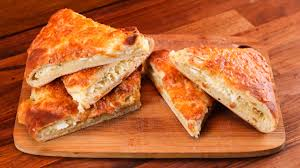
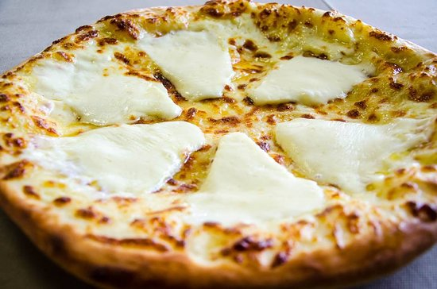
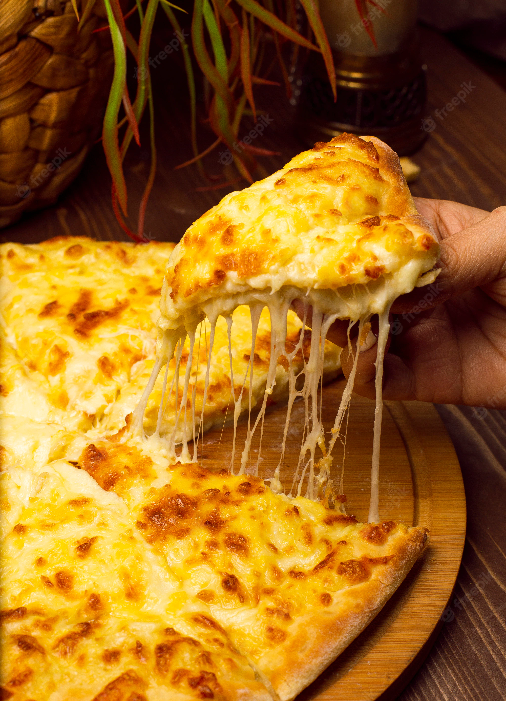
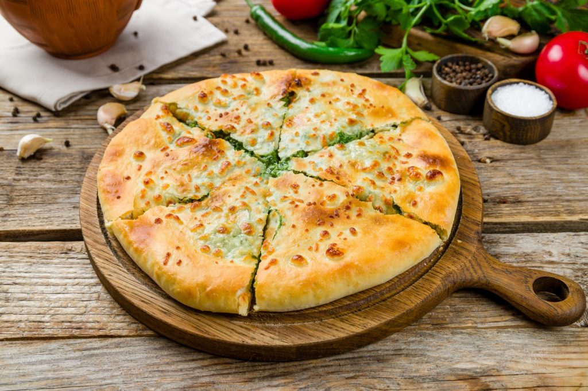

-

- 
- 
- 
- 
According to Darra Goldstein, author of “The Georgian Feast“, it is difficult to pinpoint the exact chronology of this elaboration. It probably dates back to the 12th century when Georgia went through the Renaissance. The name connects two different cultures. The word “khacha” in Georgian means “curdled cheese” and “puri“, which comes from India and means “bread“.
Dali Tsatava, former professor of gastronomy at the Georgian Culinary Academy in Tbilisi, states that the khachapuri could be a “cousin” of pizza. He says that Roman soldiers passed through the Black Sea area and brought with them recipes, including one that might resemble a pizza.
Here are the most common ingredients used to make the dish:
And here is how you make it: